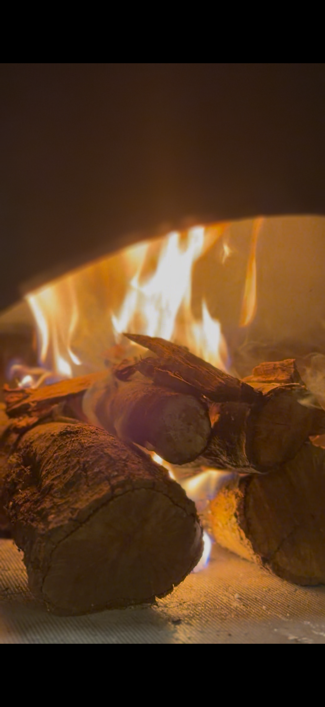
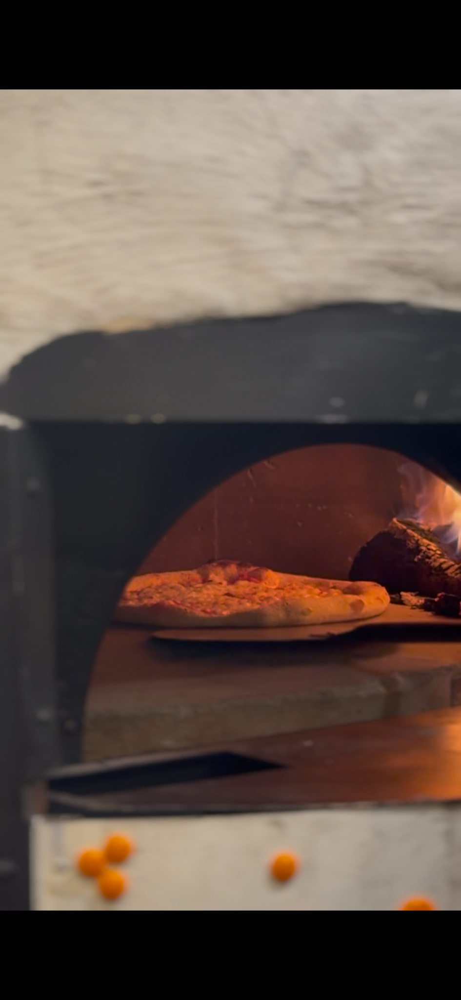
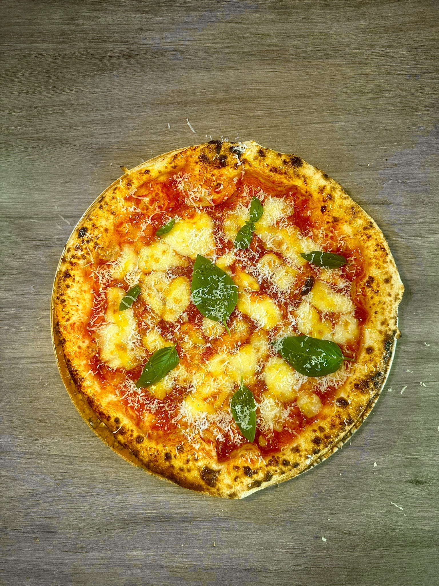
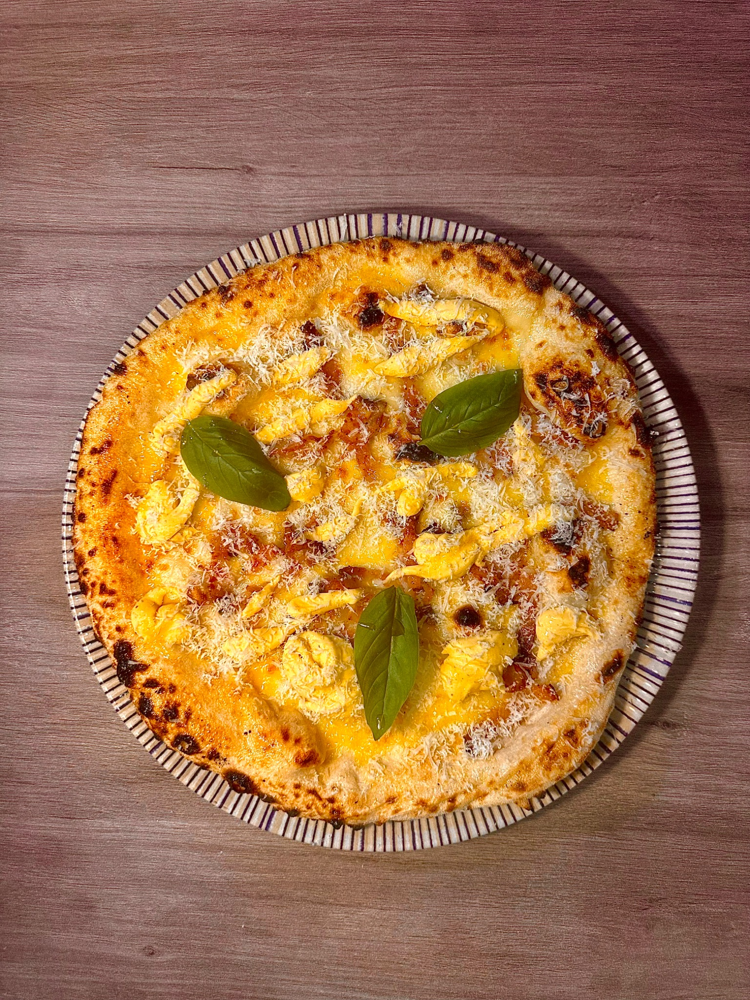

1 · La masa
Todo empieza aquí.
Reposo, tensión y fermentación. La base de una buena pizza.
Masa madre, fermentación larga, fuego real y producto italiano. Entras, entiendes la propuesta en segundos, ves las pizzas, eliges tu local y actúas.
La web no habla del diseño. Habla del proceso que hace que la pizza merezca la pena: la masa que reposa, el horno encendido y la cocción que define el borde, el aroma y la textura.

Reposo, tensión y fermentación. La base de una buena pizza.

Es parte del sabor, del ritmo y del espectáculo.

Borde vivo, centro jugoso y un acabado que vende solo.
Clásicas, intensas y favoritas de la casa. Las suficientes para abrir apetito sin complicar la decisión.

San Marzano, fior di latte, parmigiano reggiano y albahaca.

San Marzano, fior di latte, spinata picante y albahaca.

Fior di latte, burrata, mortadella de Bologna, pistacho y albahaca.

Fior di latte, guanciale crujiente, crema de carbonara y parmigiano.

Crema de trufa, provola affumicata, speck y parmigiano reggiano.

Provola affumicata, porchetta, rúcula fresca y parmigiano.

Fior di latte, nduja calabresa, ricotta y miel.

Fior di latte, grelo italiano salteado, salchicha fresca y albahaca.
Marca clara, hoteles bien identificados y una única misión: que el usuario entre a su local y pase a llamar o abrir Instagram.
Hotel Faranda Pathos Gijón
Ascend Hotel Collection
Centro de Gijón, propuesta napolitana directa y una experiencia pensada para comer, pedir o volver.
Hotel Faranda Los Tilos
Ascend Hotel Collection
Una versión clara y visual de Panzzoni en Santiago: horno, producto y decisión rápida desde móvil.
Esta sección está puesta como parte real de la experiencia: ayuda a vender mejor takeaway y protege el recuerdo final del producto.